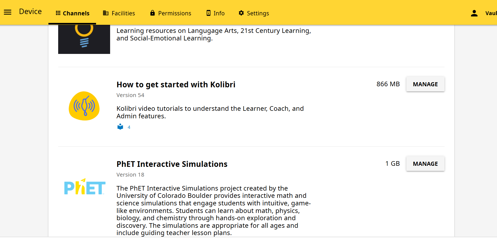
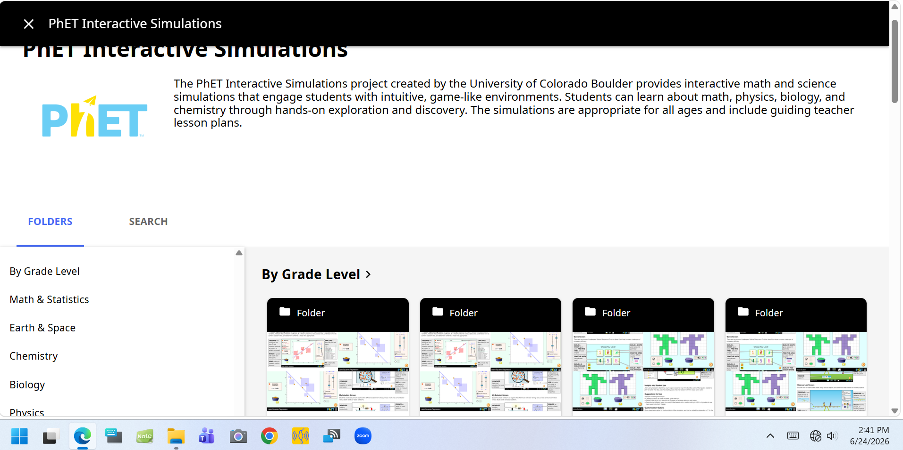

Project Overview
In the remote schools around Lewa Wildlife Conservancy, a fast internet connection is a luxury rather than a given. This project put learning first and connectivity second by building an offline‑first digital curriculum on the Kolibri platform, so that quality educational content remained available whether or not the network was.
My role sat at the intersection of content and classroom: selecting, organising, and packaging resources that teachers could actually use, then making sure the platform delivered them smoothly on low‑spec devices with no internet dependency.
Key Responsibilities
- Curated and structured offline digital learning content aligned to learner needs.
- Installed and configured Kolibri learning servers for fully offline access.
- Integrated STEM and digital literacy materials into a coherent learning library.
- Organised resources into clear channels and lessons for structured self‑study.
- Coached teachers on locating, assigning, and reusing digital content in class.
Content & Platforms Curated
- Kolibri Offline Learning Library
- STEM & Digital Literacy Resources
- Interactive Educational Content
- Structured Channels & Lessons
- Offline Learning Servers
- Teacher-Facing Resource Guides
Tools & Technologies Used
Curation & Configuration Activities
- Selecting and reviewing content for relevance and quality
- Installing and configuring Kolibri servers for offline use
- Organising resources into channels, topics, and lessons
- Packaging interactive content for low-spec devices
- Coaching teachers on assigning and reusing content
- Iterating the library based on classroom feedback
Impact & Outcomes
- Restored reliable access to rich educational content in connectivity‑poor schools.
- Gave teachers a ready‑made, well‑organised digital library they could trust.
- Strengthened digital literacy by putting interactive content directly in learners' hands.
- Created an inclusive, offline‑capable learning environment that left no learner behind.
Project Evidence


Skills Demonstrated
- Offline Curriculum Curation
- Kolibri Server Configuration
- Content Organisation & Structuring
- STEM & EdTech Integration
- Teacher Coaching & Support
- Offline-First Solution Design
Project Outcome
This project strengthened practical experience in building offline-first learning systems, from content curation and server configuration to classroom-ready organisation. It also enhanced the ability to deliver quality digital education in connectivity-poor environments, ensuring learners and teachers in Lewa-supported schools could rely on a structured, accessible curriculum regardless of internet availability.